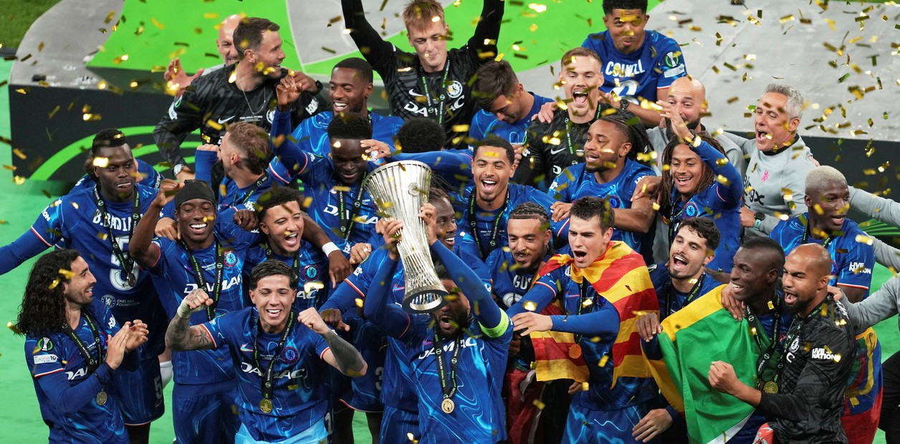

Fundación y Primeros Pasos (1905-1949)
El Chelsea Football Club fue fundado el 10 de marzo de 1905 en el pub The Rising Sun...
Desde el comienzo, el club llamó la atención por su estadio moderno y su ambición...

Primeros Éxitos y Crecimiento (1950–1970)
El club comenzó a fortalecerse en los años 50...
Durante los años 60, el Chelsea se asoció con el estilo moderno de Londres...

Crisis y Reconstrucción (1980–2000)
Los años 80 fueron una etapa muy complicada...
En los 90 comenzó un renacimiento...

La Nueva Era con Abramóvich (2003–2010)
En 2003, Roman Abramóvich compró el club...
Con José Mourinho como entrenador en 2004...

Primer Campeón de Europa (2012)
En 2012, el Chelsea vivió uno de los momentos más importantes...
Didier Drogba fue el héroe, empatando el partido...

La Segunda Champions y la Nueva Generación (2021)
En 2021, bajo la dirección de Thomas Tuchel...

Actualidad del Club
Hoy, el Chelsea continúa siendo uno de los equipos más influyentes...
